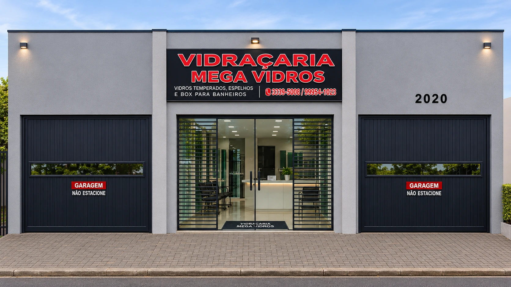
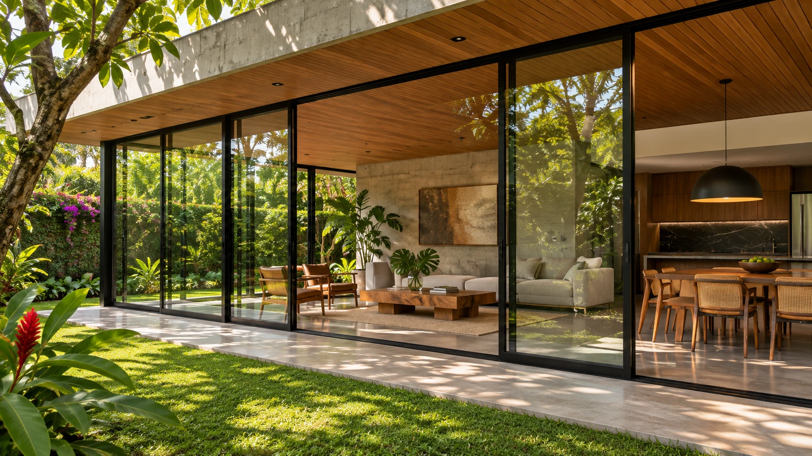
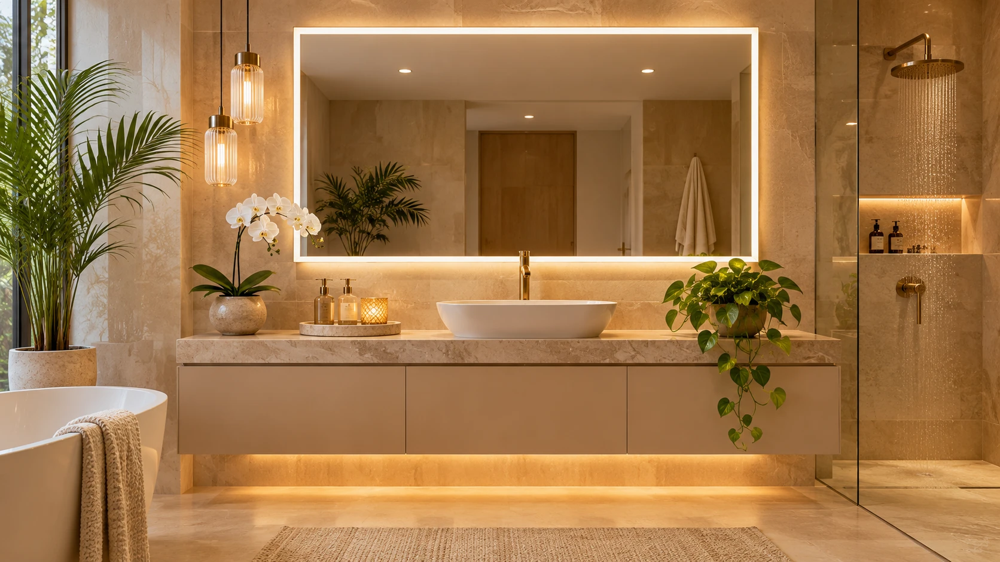
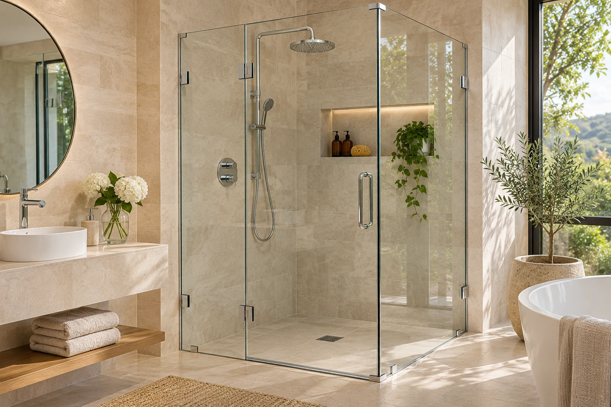
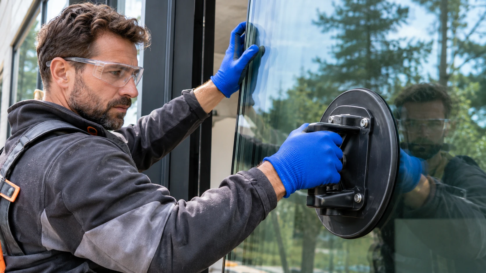
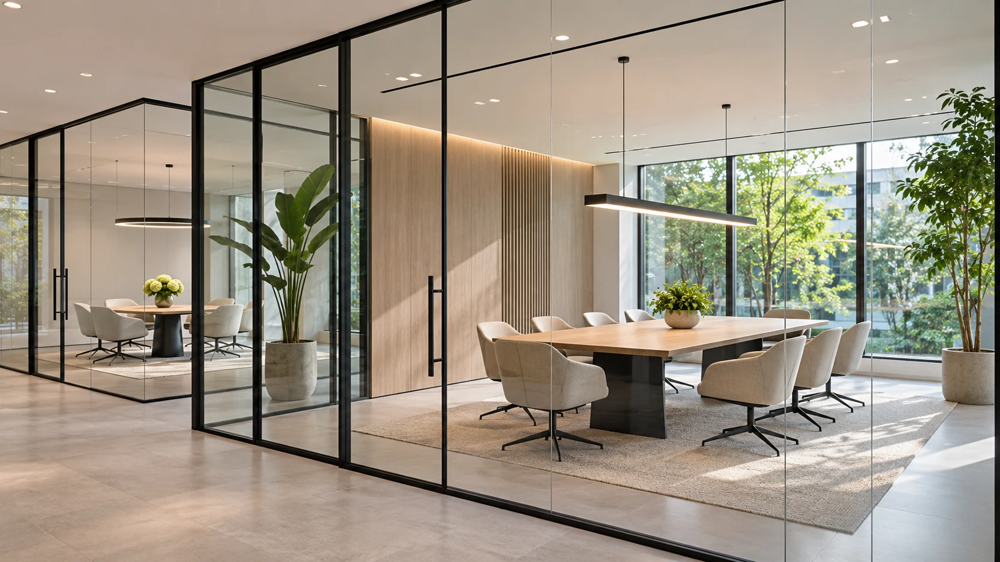

1. Atendimento
Entendemos sua necessidade e orientamos a melhor solução.
Vidros temperados, espelhos, box para banheiro, divisórias e projetos sob medida, com qualidade, segurança e acabamento de alto padrão.
Um processo simples, transparente e eficiente para transformar o seu ambiente com vidro.
Entendemos sua necessidade e orientamos a melhor solução.
Enviamos um orçamento personalizado, com transparência e agilidade.
Desenvolvemos a medida ideal, com qualidade e precisão.
Realizamos a instalação com equipe especializada e acabamento impecável.
A Mega Vidros é uma vidraçaria especializada em soluções em vidros, espelhos e box para banheiro, atendendo Cascavel/PR e região com qualidade, segurança e atenção em cada detalhe.
Projetos sob medida que unem funcionalidade, beleza e durabilidade para o seu ambiente.

Conheça nossos principais serviços e encontre a solução ideal para o seu projeto.

Segurança, resistência e elegância para diversos ambientes.

Amplitude, modernidade e sofisticação para o seu espaço.

Conforto, praticidade e mais beleza para o seu banheiro.

Instalação profissional, ajustes e manutenção com total segurança.

Soluções personalizadas em vidro para residências, comércios e empresas.
Depoimentos demonstrativos para apresentação do site.
“Fomos bem orientados desde o primeiro contato. O orçamento ficou claro e conseguimos escolher uma solução adequada para o nosso banheiro.”
“O espelho trouxe mais amplitude para o ambiente. Gostamos do cuidado com as medidas e dos detalhes do acabamento.”
“A divisória de vidro deixou o escritório mais bonito e funcional. O resultado combinou com o que imaginávamos para o espaço.”
R. Europa, 2004–2074 – Periolo, Cascavel/PR, 85817-310
Abrir no Google Maps ↗Envie sua mensagem e solicite um orçamento diretamente pelo WhatsApp.